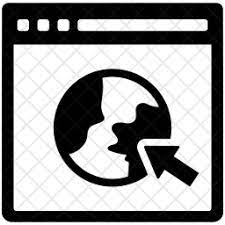

INFO

Website
www.sundypongpuntara.com
EDUCATION
California State University of Northridge
Bachelor of Science Degree in Computer Science
August 2017 - December 2020
GPA: 3.28
SOCIAL
Linkedin
www.linkedin.com/in/sundypongpuntara
Facebook
www.facebook.com/pongpuntara
Github
www.github.com/SundyWundy
SUNDY PONGPUNTARA
Recent Computer Science graduate seeking opportunities to leverage my skills in web development
Skills
Proficient: Html, CSS, Javascript
Familiar: Java, C, C++, Kotlin, Firebase, A-Frame, Android Studio
Work Experience
Baskin Robbins
August 2006 - November 2012
- Responsible for opening and closing the store
- Managed the money safe and balanced the cash at the end of the work day
- Trained new employees
Project
Minecraft Museum Website
August 2020 - December 2020
- A website with a VR museum experience in Minecraft using HTML, CSS, and A-Frame
- Utilized A-frame to build the VR experience
- Users are able to explore an online museum and interact with various blocks, mobs. and items in Minecraft.
- Used Mineways to export a Minecraft world into a 3d file
Unison
August 2019 - May 2020
- A android application that helps friends planing events by merging each other's calendar made with android studio
- Utilized Firebase api to store account data
Mask Detection
August 2020 - December 2020
- AI training and testing software that can detect if a user is wearing a mask or not with Python
- Utilizeds Keras for real time face mask detection